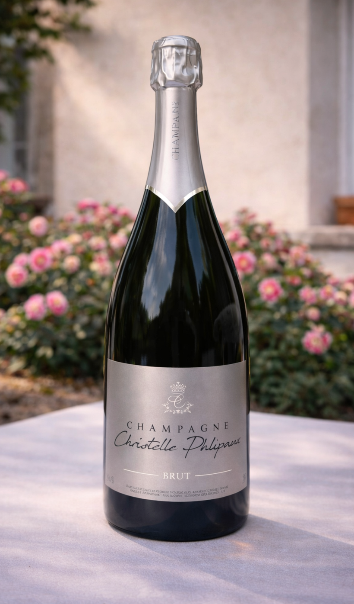

Pour ouvrir la table
Brut Tradition
Le brut qui signe la maison : net, droit, sans maquillage.

Apéritif, table, première bouteille à ouvrir sans hésiter.
Sensation
Frais, droit, tenu.
Formats
75 cl, magnum, carton de 6.